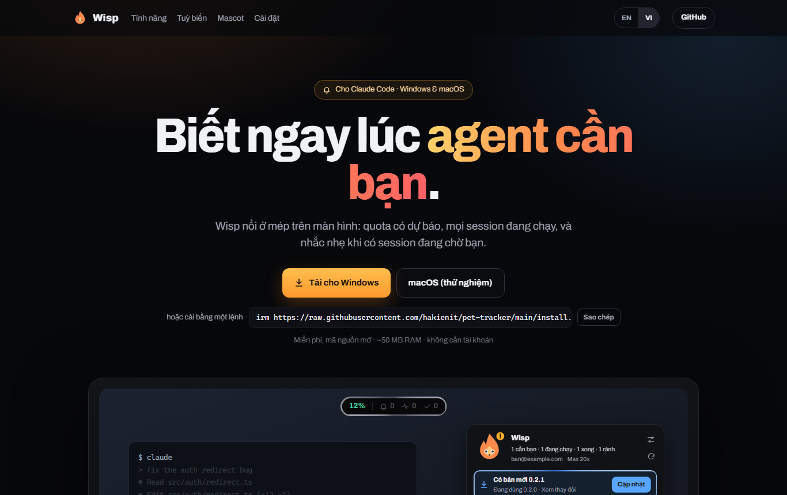
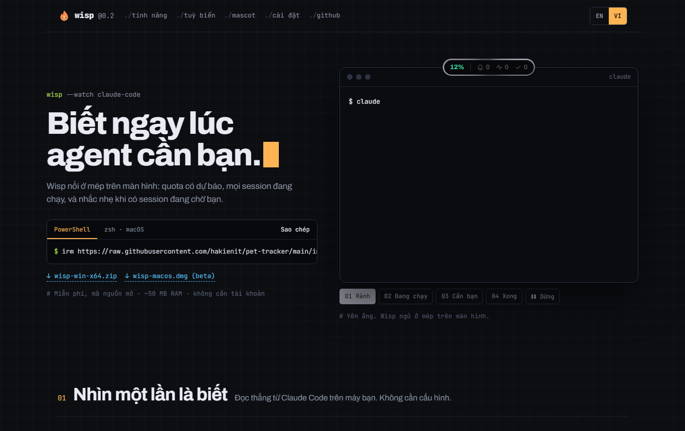
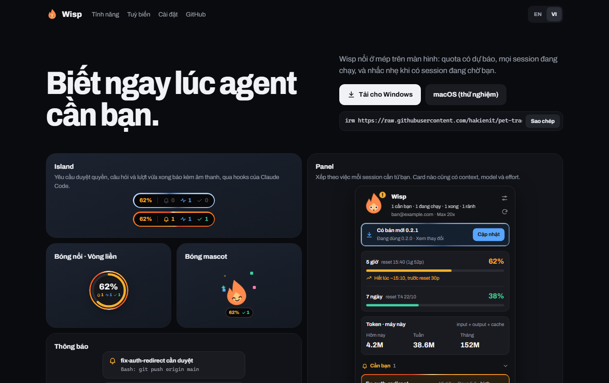
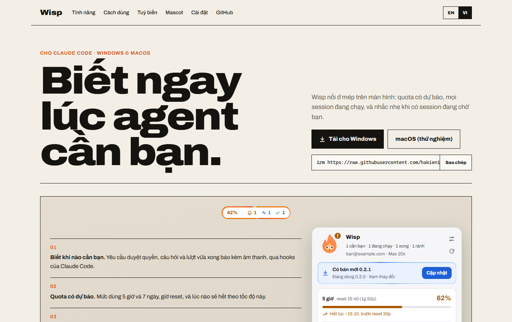
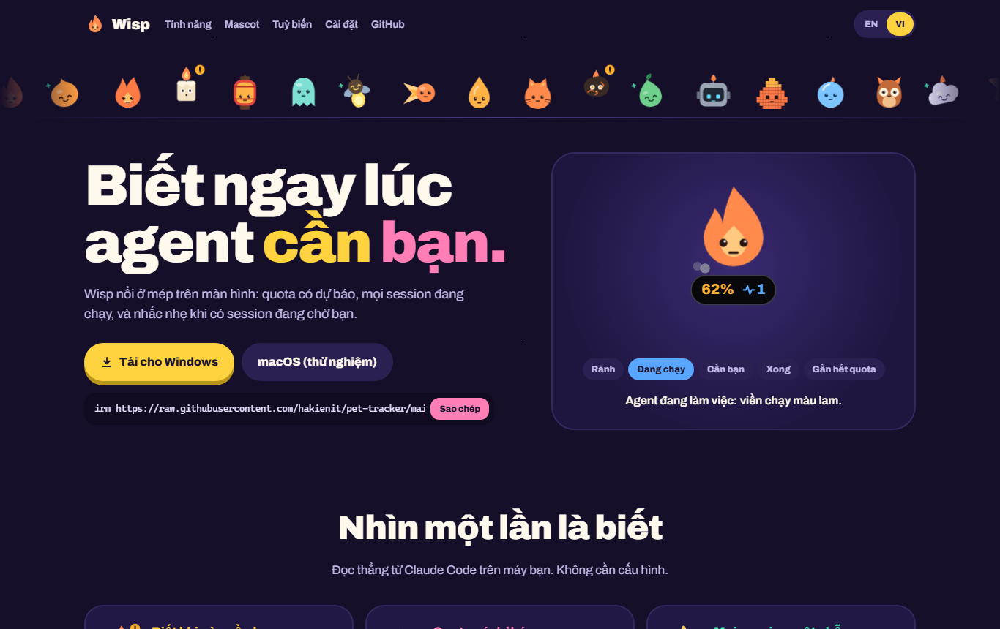
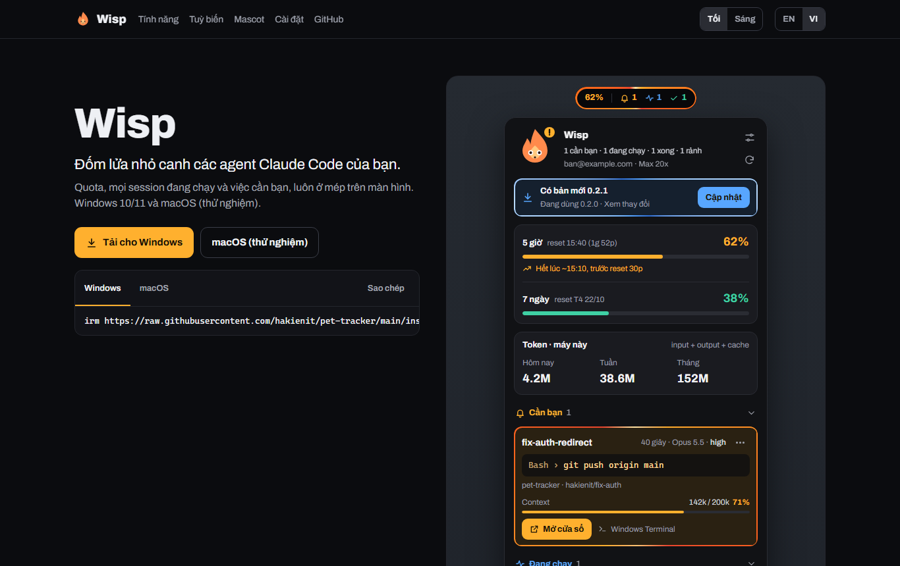

A · Aurora
Tối, quầng sáng nhẹ, tiêu đề lớn ở giữa. Cảnh desktop chạy demo 4 trạng thái (rảnh, chạy, cần bạn, xong) có thông báo thật, nút dừng.
Xem trangCùng nội dung song ngữ, cùng component thật của Wisp, 5 hướng thiết kế khác nhau. Mở từng trang để xem chuyển động và bấm thử (đổi ngôn ngữ, chọn mascot, chọn kiểu bóng).

Tối, quầng sáng nhẹ, tiêu đề lớn ở giữa. Cảnh desktop chạy demo 4 trạng thái (rảnh, chạy, cần bạn, xong) có thông báo thật, nút dừng.
Xem trang
Cho dev: chữ mono, lưới mờ, lệnh cài là nhân vật chính. Cửa sổ Claude Code gõ từng dòng, island phản ứng theo.
Xem trang
Lưới ô, mỗi ô là một component chạy thật: island, panel, bóng tín hiệu đổi kiểu, bóng mascot, thông báo, dự báo, token.
Xem trang
Sáng, giấy ấm, chữ giãn rộng rất lớn, đường kẻ đen, các phần đánh số. Component dùng theme sáng.
Xem trang
Vui: nền tím đêm có sao, đoàn 40 mascot đi ngang đầu trang, mascot lớn đổi biểu cảm, chọn mascot theo nhóm.
Xem trang